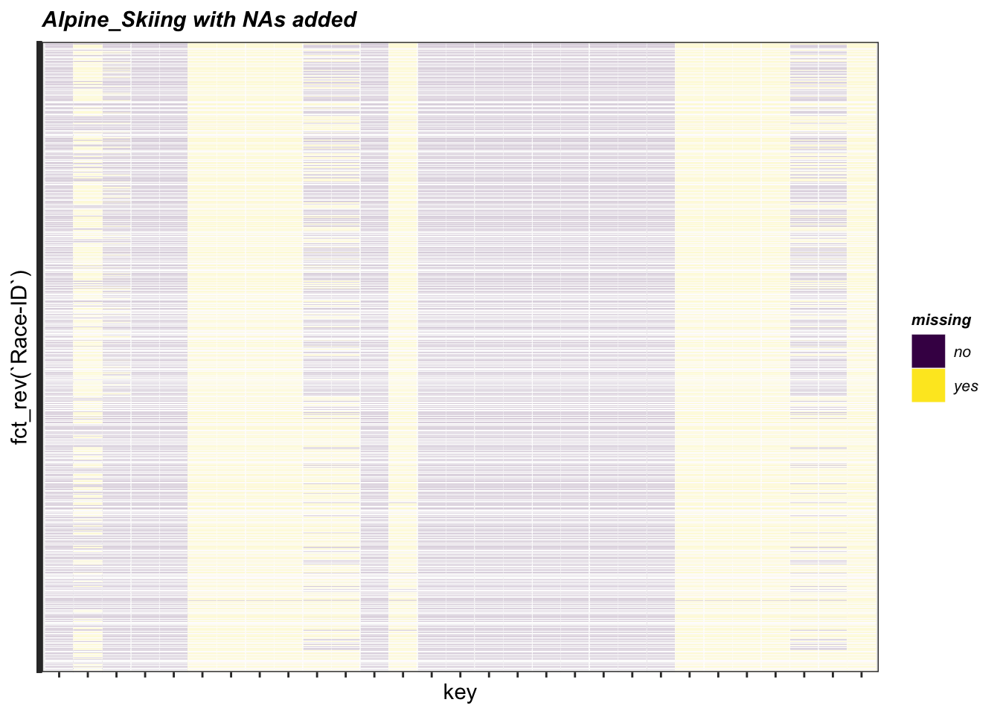
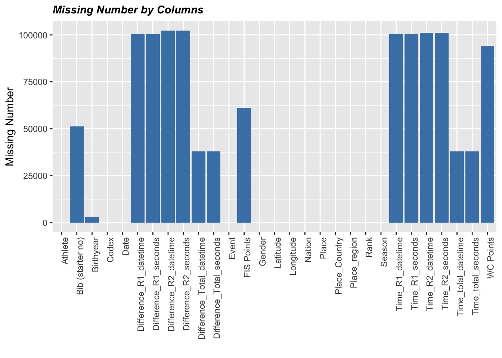
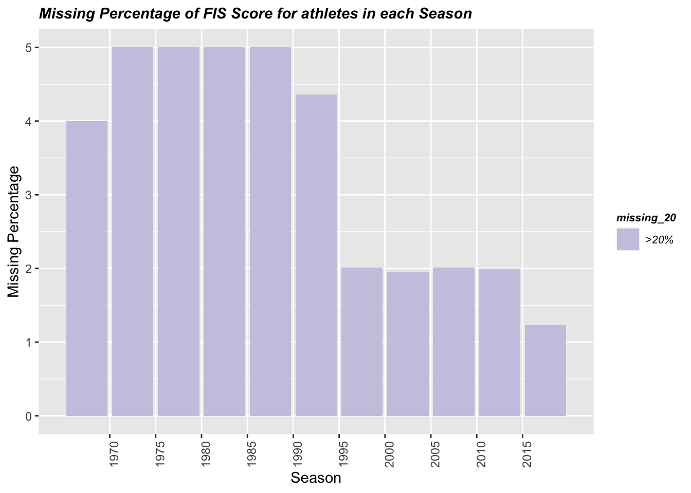
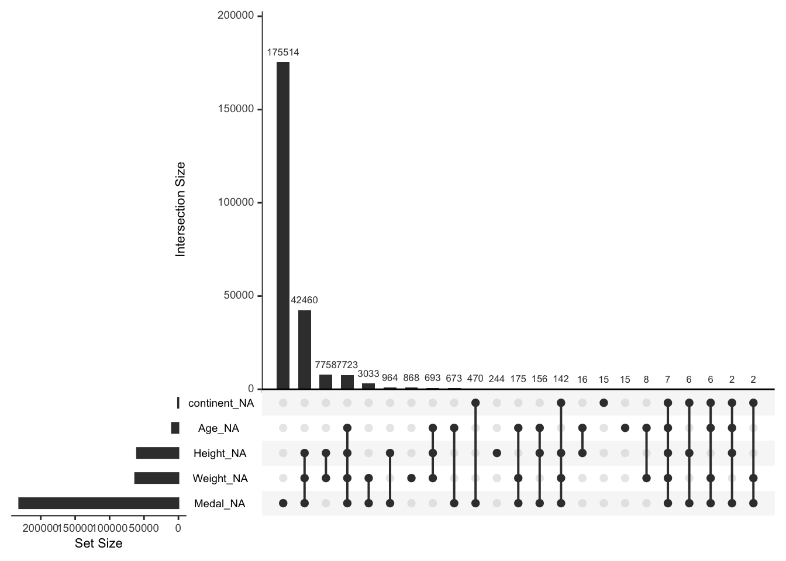
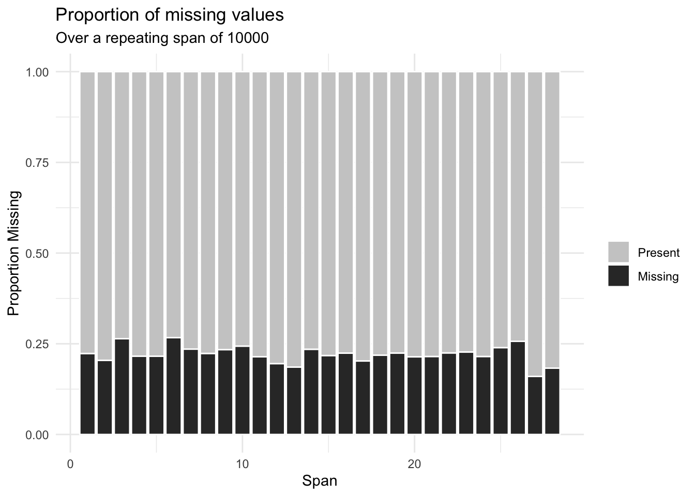
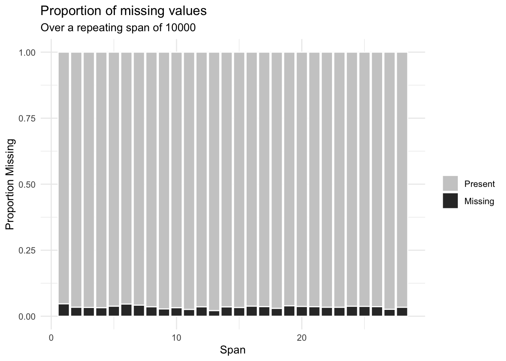

Chapter 4 Missing values
4.1 Alpine_skiing.csv
Describe missing pattern by row

- There are several columns with almost no values or missing percentages larger than 50% for the Alpine Skiing dataset, which means these columns could be neglected when using this dataset. While for some columns, their partial missing patterns show an average missing percentage, which indicates that imputation might be helpful when analyzing our data.
Describe missing pattern by column
## Difference_R2_datetime Difference_R2_seconds Time_R2_datetime
## 102286 102286 101165
## Time_R2_seconds Difference_R1_datetime Difference_R1_seconds
## 101165 100376 100376
## Time_R1_datetime Time_R1_seconds WC Points
## 100376 100376 94154
## FIS Points Bib (starter no) Time_total_datetime
## 61274 51299 37931
## Time_total_seconds Difference_Total_datetime Difference_Total_seconds
## 37931 37931 37931
## Birthyear Rank Race-ID
## 3191 6 0
## Codex Event Place
## 0 0 0
## Place_Country Place_region Date
## 0 0 0
## Season Athlete Nation
## 0 0 0
## Gender Latitude Longitude
## 0 0 0
- For Alpine_Skiing, essential columns reflecting demographic of athletes and races information, like latitude/longitude/season/athlete/nation/gender are not missing. Yet there are significant missing patterns for some extra columns, like ‘FIS Points’/’Bib (starter no). And columns with the most significant missing pattern are time and time differences columns.
Describe Missing pattern by value
## # A tibble: 3,046 × 5
## # Groups: Race-ID [3,046]
## `Race-ID` Season num_races num_na percent_na
## <chr> <dbl> <int> <int> <dbl>
## 1 2452_Are_1990-03-16 1990 15 15 1
## 2 184_Kitzbuehel_2009-01-25 2009 86 65 0.76
## 3 6069_Maribor_2006-01-08 2006 83 63 0.76
## 4 12_Levi_2017-11-12 2018 92 68 0.74
## 5 148_Kitzbuehel_2012-01-22 2012 94 70 0.74
## 6 41_Kitzbuehel_2016-01-24 2016 84 62 0.74
## 7 103_Zagreb-Sljeme_2015-01-06 2015 82 60 0.73
## 8 1150_Kitzbuehel_2002-01-20 2002 92 67 0.73
## 9 151_Kitzbuehel_2011-01-23 2011 99 72 0.73
## 10 496_Kitzbuehel_2007-01-28 2007 86 63 0.73
## # … with 3,036 more rows## # A tibble: 9 × 4
## Season num_years num_na percent_na
## <dbl> <int> <int> <dbl>
## 1 2010 3759 1566 0.42
## 2 2011 3720 1506 0.4
## 3 2012 4435 1708 0.39
## 4 2013 3710 1504 0.41
## 5 2014 3957 1566 0.4
## 6 2015 3882 1546 0.4
## 7 2016 4472 1823 0.41
## 8 2017 3882 1592 0.41
## 9 2018 3955 1623 0.41
- Check missing patterns of the FIS Score of an athlete along the Seasons. Set 20% as a threshold for the missing percentage, yet we find that FIS Score’s absent rate among all the Season bins is constantly more significant than 20%.
4.2 Olympic Athletes and Events.csv
gg_miss_upsetshows the missing values for Medal, Weight, Height, Age, and continent. Regarding the Y-axis bar chart, flipped y-bars indicate the total number of missing for each of the five variables. For instance, over 85% of ‘Medal’ is missing. Yet this is reasonable since this dataset includes all the attending athletes. For Weight and Height, they respectively miss 25% of the data. In comparison, ‘Age’ cuts approximately 3% of data and ‘continent’ 0.2%.

gg_miss_spanshows the missing span for variables. For Weight, Height, and Age, these plots indicate a uniform nonexistent span for the three variables.
